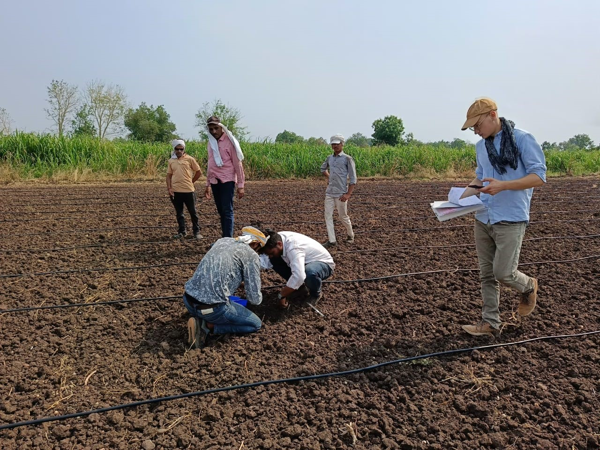
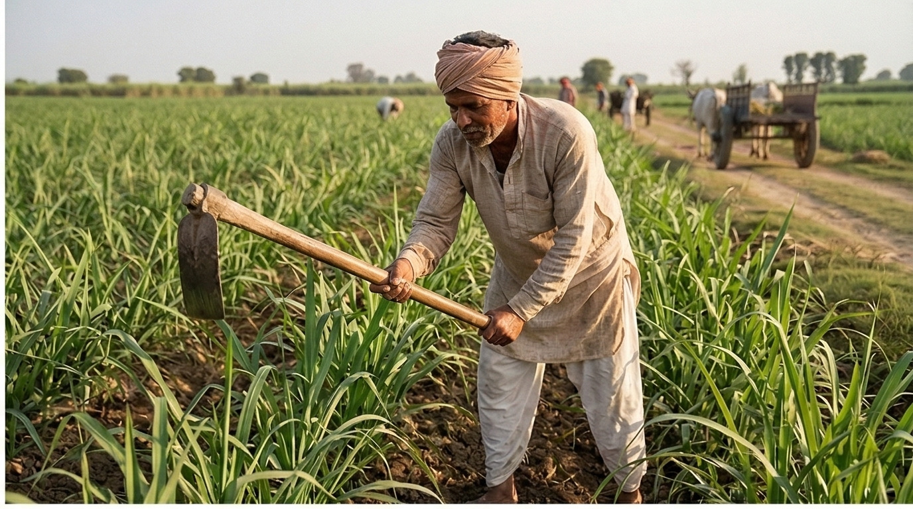
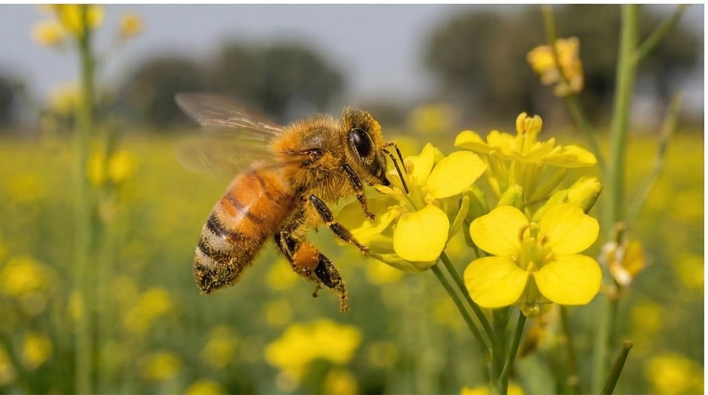
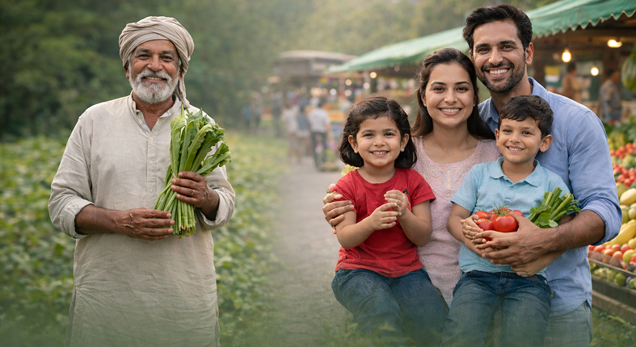

EVERYTHING BEGINS IN SOIL
Clean produce begins long before it reaches the kitchen. It begins in soil, patience and honest effort.

FARMERS WHO CARE
Many farmers wish to farm responsibly.
They simply need people who value that effort.

LEARNING TRAVELS QUIETLY
Like the Honey Bee Network, knowledge flows gently from one farm to another.

WITH PRAKRUSHI
TRUST RETURNS TO FOOD
When farmers and families reconnect,food regains meaning.